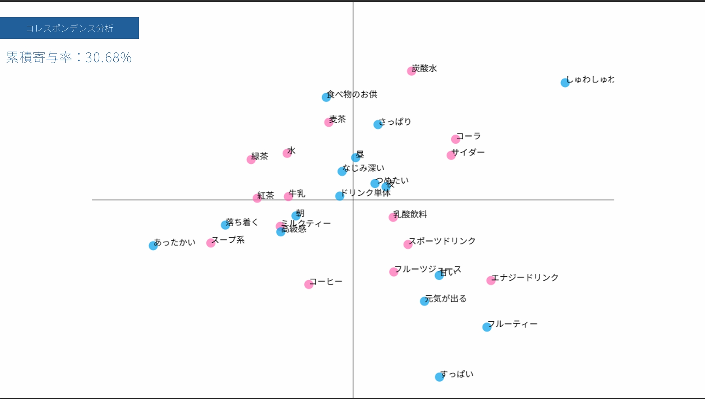
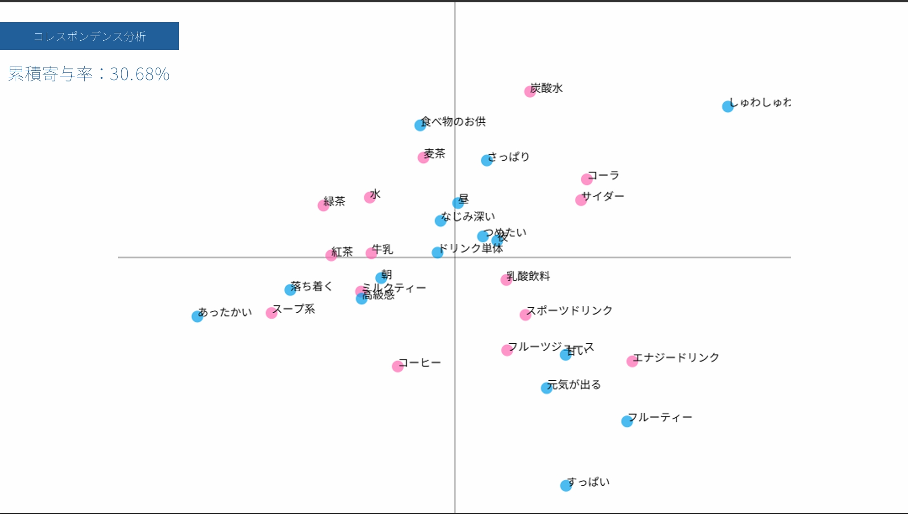

１．散布図の画像と説明
今回分析した内容は飲料についてである
飲料をコーラ・サイダー・水・炭酸水・麦茶・緑茶・紅茶・ミルクティー・スポーツドリンク
エナジードリンク・コーヒー・フルーツジュース・乳酸飲料・牛乳・スープ系にわけて
評価項目をあったかい・冷たい・しゅわしゅわ・さっぱり・すっぱい・甘い・フルーティ・元気が出る
落ち着く・朝・昼・夜・高級感・なじみ深い・食べ物に合うか・ドリンク単体にわけている
コレスポンデンス分析では累積寄与率が約３０％であり、あまり高くない
これには評価項目と飲料に関係性があまり見いだせなかった・全体にあてはまる評価項目があった(ここでの昼等)
等の原因があてはめられる

飲料をコーラ・サイダー・水・炭酸水・麦茶・緑茶・紅茶・ミルクティー・スポーツドリンク
エナジードリンク・コーヒー・フルーツジュース・乳酸飲料・牛乳・スープ系にわけて
評価項目をあったかい・冷たい・しゅわしゅわ・さっぱり・すっぱい・甘い・フルーティ・元気が出る
落ち着く・朝・昼・夜・高級感・なじみ深い・食べ物に合うか・ドリンク単体にわけている
コレスポンデンス分析では累積寄与率が約３０％であり、あまり高くない
これには評価項目と飲料に関係性があまり見いだせなかった・全体にあてはまる評価項目があった(ここでの昼等)
等の原因があてはめられる
